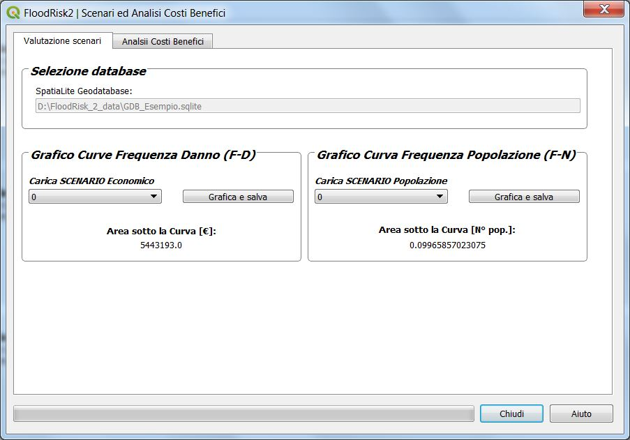
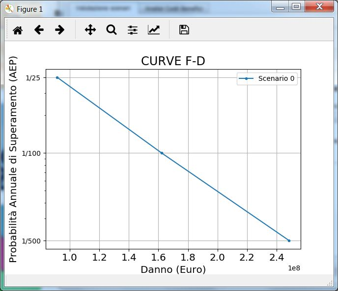
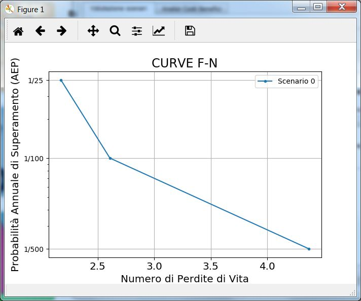
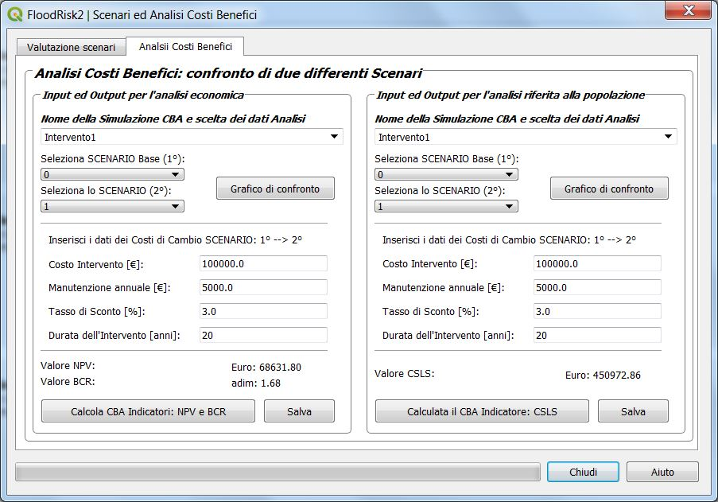
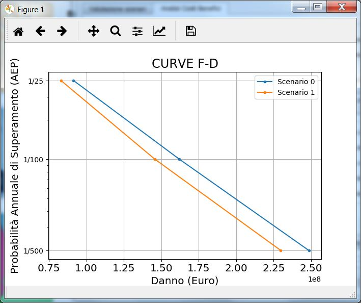
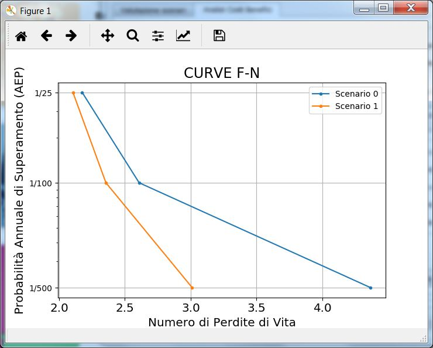

Scenari Analisi Costi Benefici¶
La finestra Scenari Analisi Costi Benefici consente di visualizzare le curve di frequenza per i vari scenari ed effettuare il confronto fra due differenti scenari ed eseguire un’analisi costi benefici.
Il tab Valutazione scenari¶

dalla sotto-finestra Valutazione scenari è possibile graficare, per ogni scenario, le due curve:
Curva Frequenza Danno (F-D)
Curva Frequenza Popolazione (F-N)
 
Il tab Analisi Costi Benefici¶

Dalla sotto-finestra Analisi Costi Benefici è possibile effettuare l’Analisi Costi Benefici mediante confronto di due scenari L’analisi costi benefici è effettuata in modo indipendente per il rischio economico e per quello alla popolazione. Per effettuare il confronto è necessario selezionare i due scenari da comparare.
E’ possibile visualizzare i grafici di confronto delle curve di frequenza:
 
La differenza di area sotto le curve di frequenza rappresenta il beneficio dell’intervento che è valutato come riduzione del danno.
Dall’interfaccia è possibile inserire i dati relativi al costo dell’intervento che sono:
Costo Intervento (€)
Costo annuale di Manunetnzione (€)
Tasso di Sconto (%)
Durata dell’intervento (anni)
Con questi dati è possibile calcolare i seguenti parametri dell’analisi costi benefici:
NPV : valore attuale netto (in italiano VAN) (€)
BCV : Rapporto Benefici Costi
CSLS : Costo per statistica vita annua salvata (Euro/vita/anno)